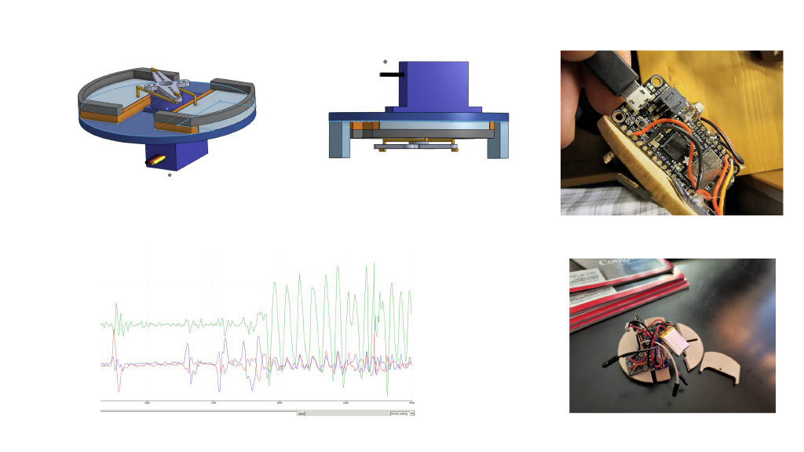
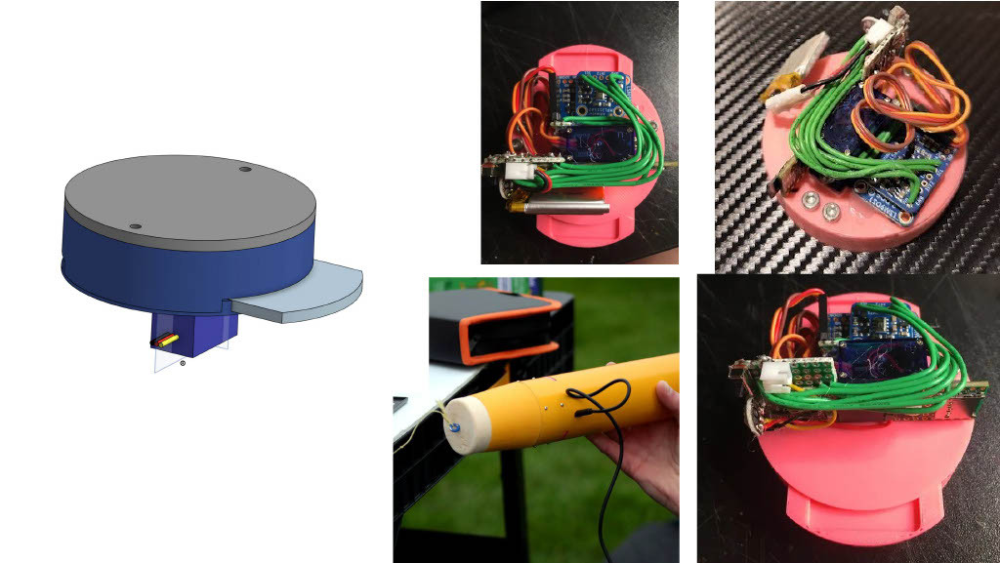
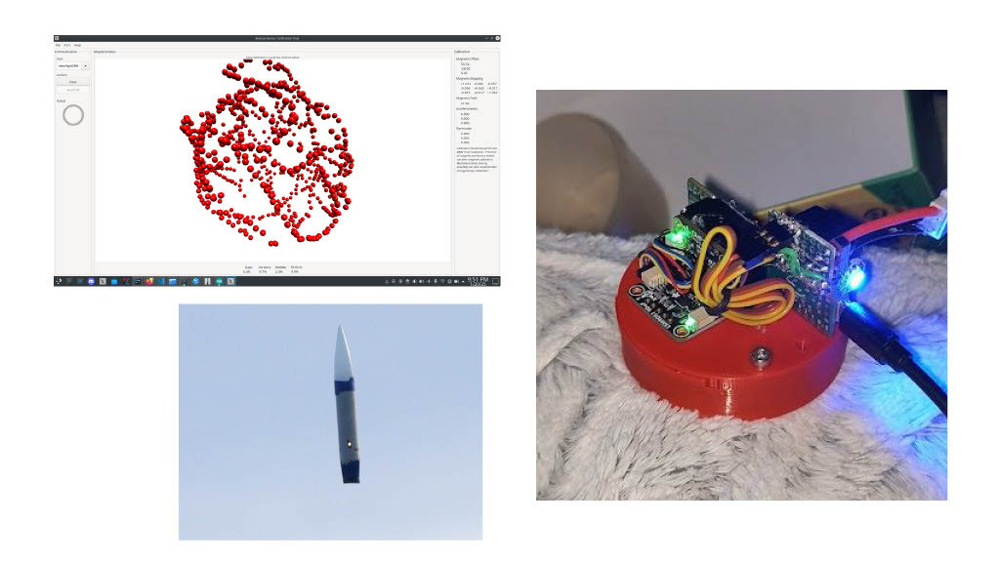
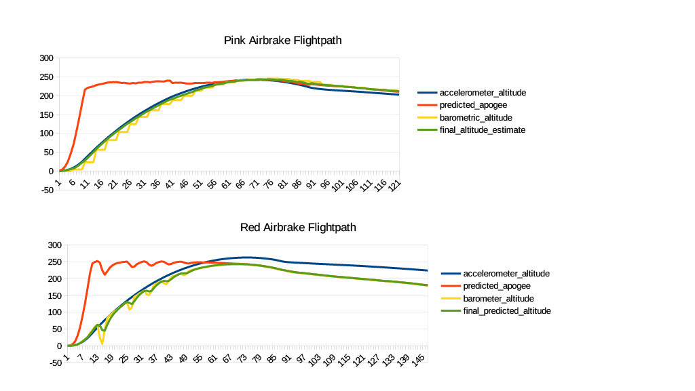

Active Control Airbrakes
The American Rocketry Challenge (TARC) is an annual challenge where contestants design and build rockets of a certain specification with the goal of reaching a target altitude and time as closely as possible, including the recovery time, while maintaining the integrity of a payload consisting of hens eggs. This year, for the 2025 challenge, our team decided to build an actively-controlled airbraking system in an attempt to effectively perfect the system.
This year, the challenge requirements were to build a rocket with a mass no greater than 650 grams and a length no greater than 650 cm, and fly two
horizontally situated eggs to an altitude of 790 feet (or as close as possible) within a timeframe of 41-44 seconds (or as close as possible). The
scoring criteria is similar to golf, in that the further away from these specifications you reach in the two qualification flights that you select
to be used to qualify for nationals, the higher and thus less optimal your score. A score of 0 would be considered perfect.
Due to the obvious difficulties in getting a rocket to consistently reach such specific an altitude in so arbitrary a time frame, I decided that
it would be worth our time to investigate using an active control system of some sorts to allievate some of the uncertainties involved. We landed
on using an airbrake, or variable-drag system, after some consideration. This system had mixed results, and due to unforseen flight conditions and some
lingering issues with the design, we did not have an optimal first flight, and due to events outside of our control our latter flights did not go
well either. We did not qualify for TARC this year- the one qualification flight that we successfully completed had a large score of 45 points- but
we do have a viable active control system that we (by which I really mean I) hope to perfect for next year. I have been entirely in charge of developing
the code for this system, while Sam Kothe has been in charge of designing the physical system and doing most of the electrical work.
The 2025 TARC Airbrake
To win the American Rocketry Challenge, you need to get as close to the target altitude and time as possible while safely recovering
one or more eggs; it is a game of precision, where every foot and every tenth of a second can mean the difference between
first place and fifth place.
If you want to win TARC, you need an angle. The reality is that even if you build a really good rocket with
the priciest, highest quality motors on the market, you are still going to be no more precise than +- 20 feet and a couple
seconds, at best. That is a lot of variability, so much that it makes winning TARC basically 50% skill and 50% chance.
The only way to improve these numbers is to develop an active control system. An active control system is a system consisting of a
microcontroller and various sensors that runs an algorithm that determines where the rocket is now, where it is going to be later,
and then uses this information to then modify the trajectory of the rocket and programatically hit the required altitude.
Ok, but how do you modify the rocket's trajectory?
There are two ways to do this- one is by speeding up, and the other is slowing down. As you may imagine, speeding up is a bit
impractical, given you are only allowed one rocket motor. As interesting as an activelly controlled rocket motor would be,
I really have no idea how you would accomplish that. So you need to slow the rocket down. How do you do that?
Airbrakes.
The premise of our entire design is to use a pair of 3D printed flaps that can be extended from the airbrake body using a servo
to increase the amount of aerodynamic drag on the rocket, and slow it down. To get an approximation of how much effect this
will have on the rocket's trajectory, I used Computational Fluid Dynamics software (Simflow) to get the amount of drag on the rocket
under different flight conditions with the airbrake deployed and undeployed, and then used some numpy and scikit-learn to do some
regressing and figure out the equation linking airspeed and drag given full airbrake deployment.
With this equation, all I had to do was create an OpenRocket extension (OpenRocket is the pre-eminent simulation
program for rocketry) that simulated the rocket's flight trajectory with airbrake deployment. This allowed us to get a
nice estimate for how our rocket would perform, and how we should design it around this performance.
How it works
The software behind our active control system is obviously integral. For the system to work properly, it needs to know the rocket's position, orientation, and velocity, and then use this to determine the rocket's trajectory, and finally determine whether or not airbrakes should be deployed. Do note that for the 2026 TARC challenge, we will be making a number of improvements upon our software that should increase our accuracy and alleviate a lot of sources of error.
Electronics
The electronics behind our airbrake weren't super complicated, and can be acquired at most electronics stores.
At the heart of everything is the microcontroller, or MCU. We finally settled on a Teensy 4.1 after trying out several
other processors. The teensy is connected to the Inertial Measurement Unit (IMU). We tried out a couple of IMUs,
but the BNO055 and LSM9DS1 were our favorites. We tried out two barometers, the MPL3115A2 and BMP388. We ran into some problems
with the BMP388 because it wouldn't let us use a high enough refresh rate, introducing error to our system.
Finally, to actually deploy the airbrake flaps, we had a KST DS113mg servo.
Avionics
The base layer of our active control system is the avionics. Avionics refers to the different sensors onboard the control system that it uses
to determine where the rocket is right now, as well as where it is heading and what its orientation is; position, orientation, and velocity.
To get this information, we used two sensors; an Inertial Measurement Unit (IMU) and a barometric pressure sensor.
An IMU itself is comprised of three different sensors- an accelerometer, which measure changes in velocity along three axes, a
gyroscope, which measure the rate of rotation of the IMU, and a magnetometer, which uses the earth's magnetic field to
determine an absolute rotational position fo the IMU. The barometer measures the atmospheric pressure, which can be used to determine altitude.
Sensors have a lot of noise, and they don't always provide enough information on their own. For example, the barometer
does a great job of providing an accurate altitude over a longer period of time, but it isn't very accurate on a short time scale.
This is why you use something called sensor fusion. Sensor fusion works by combining data from two different kinds of sensors
and uses them to come up with a super accurate estimate of whatever it is you are measuring.
We used sensor fusion first with our IMU. After getting the raw acceleration, rate of rotation, and orientation values along the X, Y, and Z axes,
I was luckily able to find some nice C++ sensor fusion libraries that take these three values and calculate the orientation of the
rocket with amazing precision. The gyroscope in the IMU will begin to drift after some time, but the magnetometer is slow to normalize and doesn't perform
well under short time scales, so if you combine them you get the best of both worlds.
To calcuate altitude, I used a simple complementary filter to combine the reading from the barometer whenever it was updated with
the reading from the accelerometer. Basically, you weigh both the readings from the accelerometer and the barometer, and then combine the weighted
readings to come up with an altitude reading. In our case, I weighted the accelerometer heavily (like 90%), with the 10% weighting of the barometer
primarily to counteract any drift that might build up in the accelerometer.
altitude = (1-BARO_GAIN) * (altitude + velocity_z * delta_time) + (BARO_GAIN) * baro_altitude
Getting orientation
Obviously, the rocket probably isn't going to be flying perfectly straight for entire flight,
so we need to determine its exact orientation if everything is going to be accurate enough for the competition.
There are two ways to keep track of something's orientation; one is to use euler angles, which is the method that
has been around the longest. Euler angles are problematic, however, because of a phenomenon known as gimbal lock.
Luckily, we can use 4 dimensional hyperspheres called quaternions to keep track of our orientation. No, I'm not kidding,
but its not as bad is it sounds, well, mostly. Quaternions have an equation of the form q = q0 + iq1 + jq2 + kq3, where q0, q1, q2, and q3 are real numbers,
and i, j, and k are "orthogonal imaginary unit vectors". Thanks to the help of some truly goated mathematicians,
we figured out that it is relatively straightforward to use the axis angle theorem to encode rotations inside of quaternions.
And the best part is that you can treat them like matrices.
If you want to rotate a point (x, y, z) using a rotation quaternion q,
then you convert the point into a quaternion like this
p = (p0, p1, p2, p3) = ( 0, x, y, z )
And then perform the rotation by competing one of the following operations:
For active rotation: \(p' = q^{-1}*p*q\)
For passive rotation: p' = qpq^-1
Here, p is the point being rotated, p' is the point after the rotation, q is the rotation quaternion, and q^-1 is the inverse of
the rotation quaternion. Active rotation is when the point is rotated with respect to the coordinate system,
and passive rotation is when the coordinate system is rotated with repsect to the point.
For more information, I highly recommend checking out the following resource: danceswithcode.net/engineeringnotes/quaternions
Of course, we don't care about rotating points. But if that point represents a vector, like a velocity
vector or acceleration vector, then we can use quaternions to rotate our vectors to and fro local and global coordinates.
This part is critical. The IMU only gives you the local acceleration vectors, it doesn't automatically give you
the global vectors. And in order to calculate the rocket's trajectory (More on that in a minute), you need both the
local and global acceleration and velocity vectors. With a quaternion, we can simply perform an active rotation on the
local vectors form the IMU to get the global vectors of the rocket, and if you do a passive rotation you can then get the
local vectors. This is extremely important for the simulator.
Estimating trajectory
To figure out if the airbrakes need to be deployed, we need to figure out if the rocket is on track to go above the target altitude.
Because we purposefully designed the rocket to hit an altitude higher than the target altitude 90% of the time, the airbrake
would have its chance to work its magic most of the time.
I should note that our estimation logic may have contained a fairly large flaw that we didn't pick up until
well after the competition. In the code I wrote for the 2025 competition, we used our simulator to estimate what
the apogee of the rocket would be assuming full airbrake deployment during the entire flight, which meant inputting a higher
drag coefficient into the rocket's configuration file. In hindsight, this likely contributed to us overshooting during our
first qualification flight, as the active control system would have underestimated what the apogee would be; of course,
as the rocket got closer and closer to its actual apogee this would normalize, but by the time the system realized it was going
to reach apogee at too high of an altitude, it may not have had enough velocity left to do anything substantial
and slow down the rocket, leading it to overshoot. Due to the loss of several flightlogs when we had a catastrophic
crash during one of our qualification flights, I don't have too much data to substantiate this claim, but it is a point of concern.
Anyhow, to calculate the trajectory of the rocket, we need to use the current position, orientation, and velocity, then recursively estimate the
state of the rocket after the relevant forces are applied to it. In our case, these forces are gravity and parasitic drag.
Let's start with gravity. Pretty simple- the acceleration due to gravity is equal to -g, or approximately -9.8 m/s^2. We need to subtract
g from the raw accelerometer reading; To see why this is, imagine the rocket is in free fall- its accelerometer will read zero (ignoring air resistance for a moment)
because there is nothing to actually apply a force on the rocket. Whereas, if the rocket is sitting on a table, it will falsely
read that it is accelerating because it registers the normal force of the table acting on the rocket (because of gravity).
Now, gravity is the only force we have to normalize in our calculations- forces like air resistance will be registered by the accelerometer
and so we don't have to do anything about them in the navigation phase.
Predicting forces
To simulate the future state of the rocket, however, we need to be able to figure out what the aerodynamic forces will be in the future.
To do this, we use the aerodynamic drag equation:
F_{D} = 1/2 \rho * C_{D} * A * v^2
Where A is the referance area and C_{D} is the coefficient of drag. When the coefficient of drag is multiplied by the referance area,
we can then use \rho, the density of the air, and v, the axial velocity of the rocket, to calculate the force of drag.
At this point, all that has to be done is to divide F_{D} by the mass of the rocket M to get the acceleration due to drag.
It would be nice if there were a nice algebraic way to use this equation to predict the state of the rocket at some point in the future;
however, this is not the case, because the aerodynamic drag equation contains a velocity term, meaning the acceleration is dependent
on the velocity, and thus we are dealing with a first order differential equation.
In the end, our system of equations looks like this:
vz_local' = vz_local + az_local * delta_t
az_local' = az_local - gz_local * delta_t - 1/2 \rho * C_{D} * A * vz_local^2 * delta_t
Where gz_local is the force along the local z axis caused by gravity (we use our quaternion to figure out what this is).
To solve the above system of equations, we use a technique called a fourth order Runge-Kutta solver (aka RK4). Instead of incrementally
updating the velocity and acceleration (also known as Newton's method), we use a far more robust formula that accounts for the
fact that using discrete time scales has a tendency to cause the approximation to diverge from the true value of the system, because
a discrete time scale likes to diverge from the continous time scale that differential equations depend on.
The equations for RK4 look like this:
\(k_1 = f(x, y)\)
\(k_2 = f(x + \Delta t / 2, y + k_1 * \Delta t / 2 )\)
\(k_3 = f(x + \Delta t / 2, y + k_2 * \Delta t / 2 )\)
\(k_4 = f(x + \Delta t, y + k_3 * delta_t)\)
\(y' = y + (k_1 + 2k_2 + 2k_3 + k_4) / 6\)
Where y' is the updated value of y.
In our case, \(y\) is the simulation state of the rocket, covering the acceleration, velocity, and position.
In the simulator, we take the current value of the rocket's state and create a copy of it for the simulator.
Then, we run the Runge Kutta simulation a bunch of times until the simulator state reaches apogee, and figure out what that predicted
apogee is. This happens multiple times a second, every time there is a pass through the main program loop.
Control
With a dynamic estimate of the current predicted apogee at any given time, the rocket can then adjust the airbrake deployment
depending on how far it is overshooting.
Our 2025 algorithm looked like this:
If the rocket is going to overshoot, deploy.
If the rocket is going to undershoot, undeploy.
A remarkably simple system. However, in hindsight, this was probably a really foolish approach, for two reasons:
one, the amount of time the airbrake takes to deploy is not neglible, and this would have contributed to relatively significant error,
and two, relying solely on a binary deployed/undeployed state means that any errors in apogee estimation (of which there most certainly were) could lead the system
to deploy too early or too late, and in either case cause the rocket to undershoot or overshoot; and by the time the system realized its error,
it would be too late.
One obvious solution to this problem is to use a PID (Proportional Integral Derivative) controller, which is what we are going to implement
for the 2026 TARC competition.
Instead of deploying the airbrakes at a specific time, the PID controller will dynamically adjust the percent deployment of the airbrake, depending
on how far away the estimated apogee is from our target, how quick this difference is changing, and what the value of this difference added up over time is.
This should vastly increase our accuracy.
Build process
Airbrake V0.1
Our first iteration of the airbrake was a simple contraption of laser-cut balsa wood, an SG90 servo, and an Adafruit Feather M0. It did not last long, although it provided indispensable for early tests of the navigation systems, such as the testing of our quaternion math visible in the bottom left. Airbrake V0.1 suffered two major injuries. We were able to superglue it back together after the first, but after crash #2 we decided it was out of commission.
Airbrake V0.2

Our next airbrake version was V0.2 V0.2 offered an environment to transition to the Teensy 4.1, a far more powerful microcontroller that could handle the calculations behind our work-in-progress simulator with ease.
Airbrake V1.1 (The pink airbrake)
Airbrake V1.1 was our first honest-to-god airbrake, and lasted nearly 30 flights until its untimely demise on the final launch day. The pink airbrake was slimmer than previous versions, contained a powerful DS113MG servo with 3.5kg/cm of torque that could actuate the airbrake flaps under the high-airspeed conditions of launch. For navigation, it used an mpl3115A2 barometer and a LSM9ds1 Inertial Measurement Unit. It was our most accurate and calibrated, and once I corrected a fatal error in our simulation code that had evaded us for weeks, we were able to reach peak performance irrespective of motor errors, achieving multiple perfect flights.
Airbrake V1.2 (The red airbrake)
The red airbrake was the same design as the pink airbrake, except it used a BMP390 barometer. Despite this, poor mounting of the Inertial Measurement Unit, which contains the accelerometer, gyroscope, and magnetometer (which uses earths magnetic fields to find absolute orientation) on top of the servo induced an intolerable amount of electrical interference in our system, leading to both accelerometer drift and extreme barometric inaccuracy, which is included in a later slide. The top left photo depicts the calibration script we used to calibrate the airbrakes, and which did poorly to calibrate the red airbrake. The bottom left image is from our final flight. No, the rocket should not look like that; the parachute fell out, so we were unable to qualify. The flight was so poor because of electrical interference it wouldn't have mattered anyways. By this time, the pink airbrake was dead.
Results
Due to uncaught errors in the simulation code, the airbrake software was only really fully functional for the last three launch days. We had a few perfect flights, testament to the funacionality of the code, but electrical errors in our red airbrake and the simplicity of our control algorithm, combined with some unfortunate motor luck, prevented us from reaching nationals.
Difference between Red and Pink airbrakes
As you can see in the above graph, the pink airbrake had a relatively smooth prediction of the final apogee, and a relatively effective control loop without massive control input variation. In contrast, the red airbrake (below) suffered from some extreme electrical interference that prevented the software from accurately determining the curent estimated altitude, thus rendering any estimation of the final predicted apogee useless. The oscillations in the barometer are due to the exceedingly dumb decision to place the barometer ON TOP of the airbrake servo.
Flight data
| flight # | motor | motor mass (g) | total mass (g) | apogee (ft) | chute diameters (upper stage) (inches) | duration (s) | Altitude points | Time points | total points | temperature (c) | wind speed (m/s) | notes | date (2025) | time (PDT) | ARC status | Airbrake |
| 23 | F41-8 | 57.6 | 545 | 740 | 15+15 | 39 | 50 | 8 | 58 | Motor Chuffing (significant) | 1-Apr | 17:54 | Pink | |||
| 24 | F41-8 | 57.4 | 548.6 | 757 | 15+15 | 39.3 | 33 | 6.8 | 39.8 | Motor Chuffing (significant) | 1-Apr | 17:08 | Pink | |||
| 25 | F41-8 | 57.4 | 816 | 15+15 | 49 | 26 | 20 | 46 | 1-Apr | 18:22 | Pink | |||||
| 26 | F41-8 | 57.9 | 550 | 798 | 15+15 | 44 | 8 | 0 | 8 | lower chute stuck | 1-Apr | 18:42 | Pink | |||
| 27 | E35-5 | 550.6 | 630 | 15+15 | 36 | 160 | 20 | 180 | 1-Apr | 18:59 | Pink | |||||
| 28 | F41-8 | 57.6 | 548 | 800 | 15+15 | 47 | 10 | 12 | 22 | 1-Apr | 19:34 | Pink | ||||
| 29 | F41-5 | 56.9 | 549.6 | 791 | 15+15 | 45.8 | 1 | 7.2 | 8.2 | 1-Apr | 19:48 | Pink? | ||||
| 30 | E35-5 | 57 | 545.9 | 564 | 15+15 | 226 | 164 | 390 | 15 | 2 | 4-Apr | 15:19 | Red | |||
| 31 | F41-8 | 57.3 | 545.2 | 860 | 15+15 | 45.5 | 70 | 6 | 76 | 25 | 1 | 4-Apr | 15:54 | Red | ||
| 32 | F41-8 | 57.8 | 730 | 15+15 | 43.5 | 60 | 0 | 60 | 20 | 3 | lower chute stuck | 4-Apr | 18:18 | Red | ||
| 33 | F41-5 | 57 | 756 | 15+15 | 44.3 | 34 | 1.2 | 35.2 | 16 | 1 | lower chute stuck | 4-Apr | 19:01 | Red | ||
| 34 | F41-5 | 745 | 15+15 | 46 | 45 | 8 | 53 | 0 | 4-Apr | 19:20 | Red | |||||
| 35 | F41-8 | 57.8 | 544.3 | 766 | 15+15 | 40.5 | 24 | 2 | 26 | 23 | 2.3 | 5-Apr | 11:37 | Red | ||
| 36 | F41-5 | 57.1 | 547 | 35 | 15+15 | 4.3 | 755 | 146.8 | 901.8 | 24 | 3 | motor failure (boost) | 5-Apr | 12:11 | Pink | |
| 37 | F41-5 | 57.1 | 781 | 15+15 | 43 | 9 | 0 | 9 | 5-Apr | 12:28 | Pink | |||||
| 38 | F41-5 | 57.3 | 547 | 806 | 15+15-1 | 43 | 16 | 0 | 16 | 29 | 1.2 | small hole cut in chute | 5-Apr | 13:17 | Pink | |
| 39 | F41-5 | 57.3 | 835 | 15+15-1 | 43.84 | 45 | 0 | 45 | 26 | 5-Apr | 13:43 | Q1 | Pink | |||
| 40 | F39-6 | 57.8 | 549.3 | 698 | 15+15-1 | 33 | 92 | 32 | 124 | 1 | 5-Apr | 15:02 | Pink | |||
| 41 | F39-6 | 57.2 | 547.3 | 741 | 15+15-1 | 40 | 49 | 4 | 53 | 28 | 2.5 | 5-Apr | 15:59 | Pink | ||
| 42 | F41-5 | 57.1 | 791 | 15+15-1 | 15 | 1 | 104 | 105 | motor failure (ejection charge) | 5-Apr | 16:52 | Q2 (replaced) | Pink | |||
| 43 | F41-5 | 743 | 15+15-1 | 21 | 47 | 80 | 127 | screweye ripped | 5-Apr | 18:30 | replacement Q2 (DQ) | Red |
Flights 25, 26, 28, 29, 37, 38, and 42 are the most accurate representations of our software's capability. Flight 39 used the Pink airbrake (without the electrical errors), yet it shot over the target altitude by over 40 meters. We were able to attribute this to the vastly overpowered motor we used that flight.